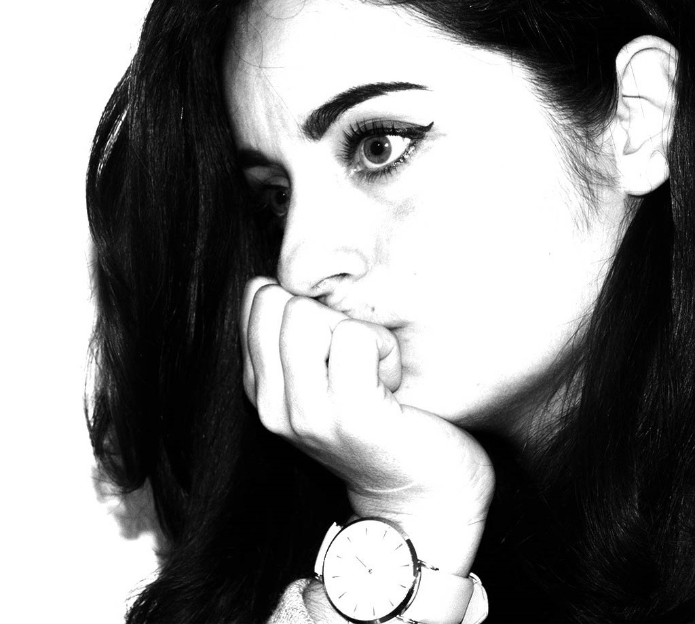

Bonjour, je m'appelle Élodie, j'ai fait de ma passion mon métier, en passant par une formation en dévelppement web chez beweb, dans la vie je suis plutôt sérieuse,
appliquée, la rigueur de l'informatique me permets de mettre à profit mes capacités. Le développement web et pour moi,
la concrétisation d'un de mes objectifs, je souhaiterais évoluer toujours plus afin d'élargir mon éventail,
je suis toujours à disposition des autres pour leur apporter ce dont ils ont besoin j'analyse très bien
les situations ce qui me permet de réagir en conséquence, je suis jeune et dynamique, j'aime les challenges,
relevés les défis, s'adaptée au changement rapide de l'informatique et pour moi une nécessité.